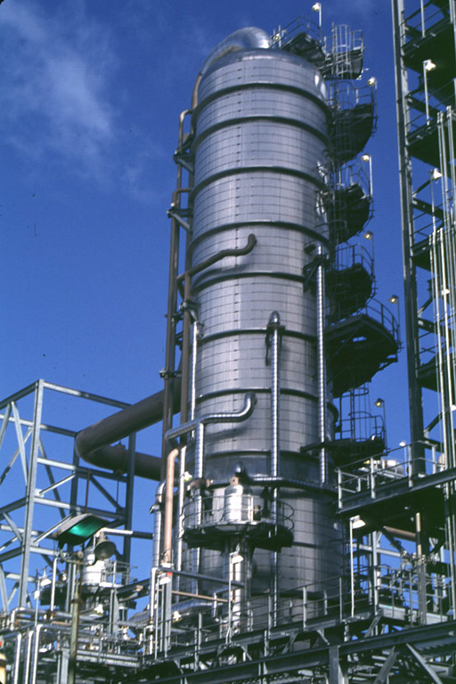
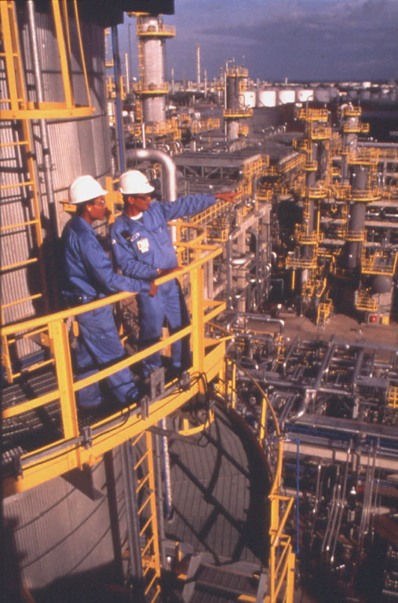

How crude oil is refined into petroleum products
Petroleum refineries change crude oil into petroleum products that are used as fuels for transportation, heating, paving roads, and generating electricity. Petroleum products are also used as feedstocks for making chemicals.
Refining breaks crude oil down into its various components, which are then selectively reconfigured into new products. Petroleum refineries are complex and expensive industrial facilities. All refineries have three basic steps:
Separation
Modern separation involves piping crude oil through hot furnaces. The resulting liquids and vapors are discharged into distillation units.
Inside the distillation units, the liquids and vapors separate into petroleum components called fractions according to their weight and boiling point. Heavy fractions are on the bottom and light fractions are on the top.
The lightest fractions, including gasoline and liquid petroleum gas (LPG), vaporize and rise to the top of the distillation tower, where they condense back to liquids.
Medium weight liquids, including kerosene and diesel oil distillates, stay in the middle of the distillation tower.
Heavier liquids, called gas oils, separate lower down in the distillation tower, while the heaviest fractions with the highest boiling points settle at the bottom of the tower.
Fluid catalytic cracking distillation unit

Refining workers overlooking a refinery

Conversion
After distillation, heavy, lower-value distillation fractions can be processed further into lighter, higher-value products such as gasoline. This is where fractions from the distillation units are transformed into streams (intermediate components) that eventually become finished products.
The most widely used conversion method is called cracking because it uses heat and pressure to crack heavy hydrocarbon molecules into lighter ones. A cracking unit consists of one or more tall, thick-walled, rocket-shaped reactors and a network of furnaces, heat exchangers, and other vessels.
Cracking is not the only form of crude oil conversion. Other refinery processes rearrange molecules to add value rather than splitting molecules.
Alkylation, for example, makes gasoline components by combining some of the gaseous byproducts of cracking. The process, which essentially is cracking in reverse, takes place in a series of large, horizontal vessels and tall, skinny towers.
Reforming uses heat, moderate pressure, and catalysts to turn naphtha, a light, relatively low-value fraction, into high-octane gasoline components.
Treatment
The finishing touches occur during the final treatment. To make gasoline, refinery technicians carefully combine a variety of streams from the processing units. Octane level, vapor pressure ratings, and other special considerations determine the gasoline blend.
Storage
Both incoming crude oil and the outgoing final products need to be stored. These liquids are stored in large tanks on a tank farm near the refinery. Pipelines then carry the final products from the tank farm to other tanks across the country.


{kind=link}
{kind=link}
{kind=link}